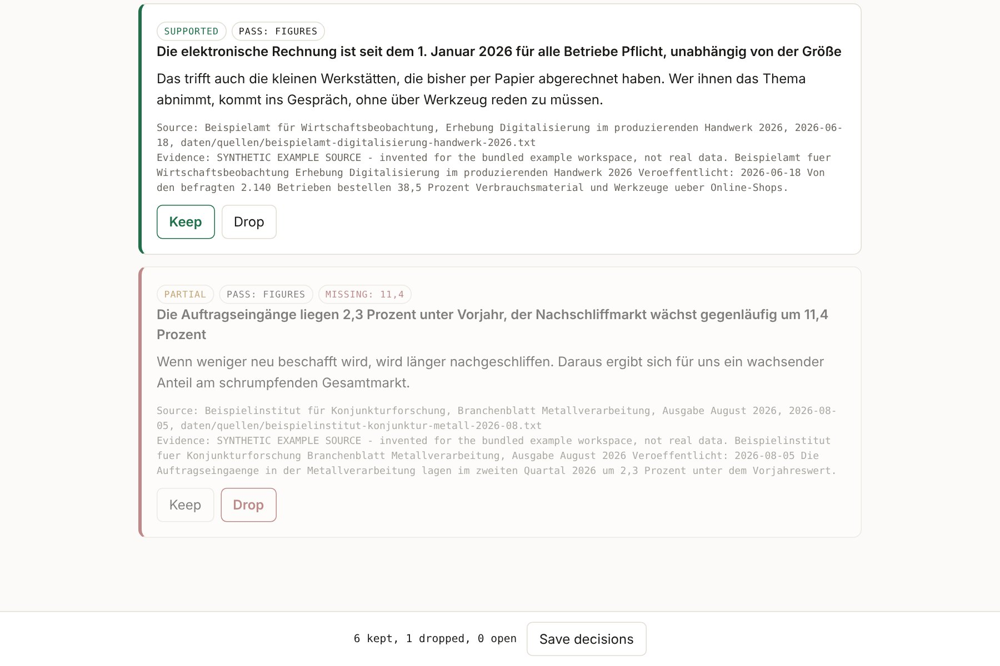

Marktrecherche mit KI.
Jede Zahl belegt.
Bevor ein Befund Ihrer Agenten in Strategie, Kampagne oder Pressetext wandert, wird jede Zahl in ihrer Quelle nachgeschlagen – und ein Mensch entscheidet.
Daniel Hütte · AI Agent Engineer · Münster
Eine erfundene Zahl liest sich genau wie eine echte
Sprachmodelle liefern Zahlen mit großer Sicherheit. Im Marketing landet eine falsche Zahl nicht in einem Test, sondern in der Öffentlichkeit.
„Die Auftragseingänge liegen 2,3 Prozent unter Vorjahr …“
Steht so in der genannten Quelle.
„… der Nachschliffmarkt wächst gegenläufig um 11,4 Prozent“
Klingt plausibel, steht aber nirgends. Ohne Prüfung geht sie in die Präsentation beim Kunden.
Beispiel aus dem mitgelieferten Beispiellauf mit gekennzeichneten Beispielquellen.
Zu viel Text, zu wenig Entscheidung
Wer den ganzen Rechercheverlauf in die nächste Sitzung mitnimmt, bezahlt für Material, über das nie jemand entschieden hat. Gemessen am Beispiellauf:
Z. = Zeichen. Die gepflegte Datei enthält 32,5 % des Rohlaufs – und nur Geprüftes. Der Startkontext umfasst zusätzlich die Grunddateien, rund 1.419 Tokens. Echte Läufe mit Downloads verdichten deutlich stärker.
Ein Tor vor dem Arbeitsbereich: prüfen, entscheiden, übernehmen
Zahlenabgleich
Jede Zahl wird in der genannten Quelle gesucht – auch über Schreibweisen hinweg. Ohne Modell, ohne Kosten.
Modell mit Zitat
Nur Offenes geht an Claude. Es muss die Stelle zitieren, auf die es sich stützt.
Freigabe
Ein Mensch behält oder verwirft jeden Befund. Die Entscheidungen liegen als Datei vor.
Gepflegte Datei
Nur Belegtes kommt in den Arbeitsbereich – die einzige Datei, die je wieder geladen wird.
„Jeder Punkt hier ist durch die Quelle dahinter belegt. Was nicht hier steht, gilt als ungeprüft und darf nicht erfunden werden.“
Die kostenlose Stufe klärt das Meiste – das Modell nur den Rest
Unbelegte Befunde im Prüfstand, erkannt je Stufe:
Was die erste Stufe sicher kann
Erfundene oder veränderte Zahlen finden: nichts übersehen, kein falscher Alarm.
Wofür die zweite Stufe bezahlt wird
Richtig zitierte Zahl, falscher Schluss: die zwei umgedrehten Aussagen fängt nur das Modell.
16 von 16 Fällen gegen das Statistische Bundesamt richtig eingestuft
Zahlenabgleich
mit Modellstufe
unbelegte Befunde übersehen
belegte zu Unrecht markiert
Echte Sätze von Destatis-Seiten, gezielt verändert: wie veröffentlicht, andere Schreibweise, Ziffer geändert, Zahl erfunden, Aussage umgedreht, Adresse antwortet nicht. Live gelaufen, Quellen mit Prüfsumme gesichert.
Die erfundene 11,4 % fällt auf, bevor sie jemand veröffentlicht
- 7 Befunde einer Umfeldanalyse für einen Werkzeughändler.
- 6 vollständig belegt, 1 nur teilweise: die 11,4 % fehlt in der Quelle.
- Der Mensch behält 6 und verwirft 1 – nachvollziehbar gespeichert.

Ein Arbeitsbereich, den Mensch und Agent gleich lesen
Acht Analyse-Skills
STEP-Makroanalyse, Mikroanalyse, Wettbewerb, Porters fünf Kräfte, Bewertungsauswertung, Zielgruppe, Entwürfe für LinkedIn und Blog.
Klare Ordnung
Stammdaten, Strategie, Produkte, Kanäle, Kampagnen, Daten – alles als lesbare Dateien, keine Datenbank dazwischen.
Budget als Zahl
Der Sitzungskontext wird gemessen statt geschätzt, bevor er etwas kostet.
Nichts verfällt still
„stale“ meldet, welche Punkte nach ihrer Art wieder fällig sind – und löscht nichts.
Was die Prüfung an Arbeitszeit spart
Alle Werte sind Annahmen – tragen Sie Ihre eigenen ein. Die erste Prüfstufe kostet nichts; die Modellstufe läuft nur über das, was offen bleibt.
Jede Entscheidung bleibt prüfbar – auch in einem Jahr
Quellen gesichert
Jeder Lauf legt Abzüge der Quellen mit Prüfsumme ab. Ändert sich eine Seite, bleibt das Ergebnis nachprüfbar.
Entscheidungen als Datei
Die gepflegte Datei entsteht nur aus Lauf und Entscheidungen – wiederherstellbar statt „Stimmung im Browser“.
Grenzen offen benannt
Der Prüfstand misst die Prüfung, nicht die Qualität der Recherche. Gefundene Fehler stehen mit Test im Repository.
Ein Pilot mit Ihrer nächsten Marktanalyse
Thema wählen
Eine Analyse, die Sie ohnehin brauchen.
Prüfen
Agentenlauf, Zahlenabgleich, Ihre Freigabe.
Vergleichen
Zeit und Fehler gegen Ihren heutigen Weg.
Daniel Hütte · AI Agent Engineer · Münster
github.com/DanielHuette/agentic-marketing